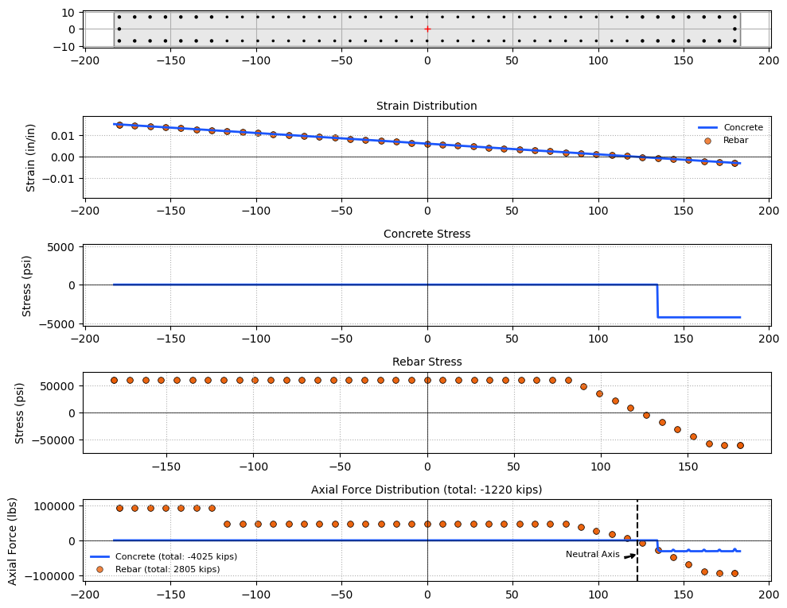
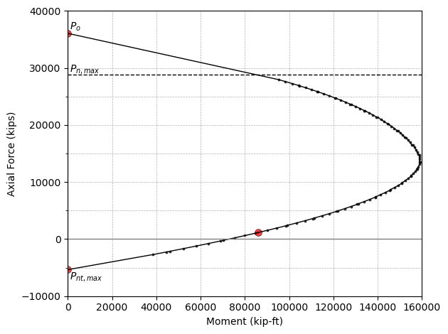
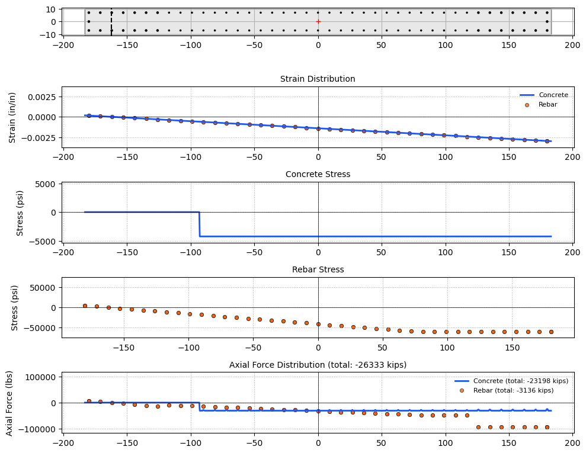

By Hossein Karagah
© Copyright 2025 GNU GENERAL PUBLIC LICENSE.
Rectangular Concrete Shear Wall Neutral Axis#
import os
import sys
sys.path.append(os.path.abspath("../../assets/modules/"))
from materials import Concrete, BilinearSteel
from shapes import Rectangle, Circle
from concrete import *
from steel import RebarSection
import pandas as pd
---------------------------------------------------------------------------
ModuleNotFoundError Traceback (most recent call last)
Cell In[1], line 5
3 sys.path.append(os.path.abspath("../../assets/modules/"))
4 from materials import Concrete, BilinearSteel
----> 5 from shapes import Rectangle, Circle
6 from concrete import *
7 from steel import RebarSection
File C:\Hossein\portfolio\hkaragah.github.io\assets\modules\shapes.py:21
19 import matplotlib.pyplot as plt
20 from dataclasses import dataclass, field
---> 21 import pandas as pd
22 import os
23 from functools import lru_cache
ModuleNotFoundError: No module named 'pandas'
# Define rebar material with fy = 60 ksi
a706_60 = BilinearSteel(name='A706 Gr.60', fy=60e3, fu=80e3, alpha=0.0) # A706 Gr. 60 low-alloy steel
# Define rebar sections
r_11 = RebarSection(size=11, bar_mat=a706_60) # No. 11 rebar
r_8 = RebarSection(size=8, bar_mat=a706_60) # No. 8 rebar
# Define concrete material with f'c = 5000 psi
c_5000 = ACIConcrete(fc=5000)
# Define shear wall cross-section (20" x 366")
rect_366x20 = Rectangle(width=366, height=20)
# Define shear wall secion
c_sec = RectangleConcreteSection(shape=rect_366x20, concrete_mat=c_5000, cover=1.5)
# Add rebar to the shear wall section
c_sec.add_rebar_row(r_11, center=(-180, 7), n=7, spacing=9)
c_sec.add_rebar_row(r_11, center=(-180, -7), n=7, spacing=9)
c_sec.add_rebar(r_11, center=(-180, 0))
c_sec.add_rebar_row(r_8, center=(0, 7), n=14, spacing=9)
c_sec.add_rebar_row(r_8, center=(0, -7), n=14, spacing=9)
c_sec.add_rebar_row(r_8, center=(-9, 7), n=13, spacing=9, reverse=True)
c_sec.add_rebar_row(r_8, center=(-9, -7), n=13, spacing=9, reverse=True)
c_sec.add_rebar_row(r_11, center=(180, 7), n=7, spacing=9, reverse=True)
c_sec.add_rebar_row(r_11, center=(180, -7), n=7, spacing=9, reverse=True)
c_sec.add_rebar(r_11, center=(180, 0))
c_sec.plot()
<Axes: >
Pu = -1060 * 1e3 # lb, external compressive axial load
phi = 0.9
Pn = Pu / phi # lb
h = max(c_sec.shape.width, c_sec.shape.height) # in
# Select one of these methods: 'secant', 'newton', 'brentq', 'bisect'
c = compute_neutral_axis(c_sec, Pn, method='secant')
print(f"Neutral axis depth: {c:.2f} in")
Neutral axis depth: 60.06 in
y_neutral = c
curvature = c_sec.mat.eps_u / y_neutral
y_s, eps_s, sigma_s, f_s = get_rebar_forces(concrete_sec=c_sec, curvature=curvature, y_neutral=y_neutral)
y_c, eps_c, sigma_c, f_c = get_rect_concrete_force(concrete_sec=c_sec, curvature=curvature, y_neutral=y_neutral, n_points=1000)
P_n1 = get_section_internal_force(concrete_sec=c_sec, curvature=curvature, y_neutral=y_neutral)
M_n1 = get_section_internal_moment(concrete_sec=c_sec, curvature=curvature, y_neutral=y_neutral)
print(f"Axial force: {P_n1/1e3:.0f} kips")
print(f"Moment: {M_n1[0]/1e3:.0f} kips-in")
Axial force: -1167 kips
Moment: -1032645 kips-in
unique_y = np.unique(y_s)
data = {
'y(in)': unique_y,
'area(in2)': np.zeros(unique_y.shape),
'strain': np.zeros(unique_y.shape),
'stress(ksi)': np.zeros(unique_y.shape),
'force(kips)': np.zeros(unique_y.shape),
}
df = pd.DataFrame(
data,
index=[f"s{y}" for y in unique_y],
)
for y, eps, sigma, f, bar in zip(y_s.flatten(), eps_s.flatten(), sigma_s.flatten(), f_s.flatten(), c_sec.rebars):
df.loc[f"s{y}", 'area(in2)'] += bar.area
df.loc[f"s{y}", 'strain'] = eps
df.loc[f"s{y}", 'stress(ksi)'] = sigma / 1e3
df.loc[f"s{y}", 'force(kips)'] += f / 1e3
df.sort_values('y(in)', ascending=False, inplace=True)
df.head()
| y(in) | area(in2) | strain | stress(ksi) | force(kips) | |
|---|---|---|---|---|---|
| s180 | 180 | 4.68435 | -0.002850 | -60.000000 | -281.061016 |
| s171 | 171 | 3.12290 | -0.002401 | -60.000000 | -187.374011 |
| s162 | 162 | 3.12290 | -0.001951 | -56.582549 | -176.701651 |
| s153 | 153 | 3.12290 | -0.001502 | -43.546498 | -135.991366 |
| s144 | 144 | 3.12290 | -0.001052 | -30.510447 | -95.281082 |
import matplotlib.axes as axes
from matplotlib.patches import bbox_artist
import matplotlib.pyplot as plt
import numpy as np
def plot_section_strain(y:list[np.ndarray], eps:list[np.ndarray], ax:axes.Axes, **kwargs):
c = kwargs.get('c', ['#1B56FD', '#EB5B00'])
lw = kwargs.get('lw', [2, 0.5])
ax.plot(y[0], eps[0], c=c[0], linewidth=lw[0], label='Concrete')
ax.scatter(y[1], eps[1], s=kwargs.get('s', 50), marker='o', c=c[1], edgecolor=kwargs.get('ec', 'black'), linewidth=lw[1], alpha=kwargs.get('alpha', 0.75), label='Rebar')
ax.axhline(0, color='black', linewidth=0.5, linestyle='-')
ax.axvline(0, color='black', linewidth=0.5, linestyle='-')
max_strain = max(eps[0].max(), eps[1].max())
min_strain = min(eps[0].min(), eps[1].min())
abs_max_strain = max(abs(min_strain), abs(max_strain))
ax.set_ylim(-1.25*abs_max_strain, 1.25*abs_max_strain)
ax.set_title('Strain Distribution', fontsize=10)
ax.set_ylabel('Strain (in/in)')
ax.legend(fontsize=8, frameon=False)
ax.grid(True, linestyle=':')
return ax
def plot_section_stress(y:list[np.ndarray], sigma:list[np.ndarray], ax:list[axes.Axes], **kwargs):
c = kwargs.get('c', ['#1B56FD', '#EB5B00'])
lw = kwargs.get('lw', [2, 0.5])
ax[0].plot(y[0], sigma[0], c=c[0], linewidth=lw[0], label='Concrete')
ax[0].set_title('Concrete Stress', fontsize=10)
ax[0].set_ylabel('Stress (psi)')
ax[1].scatter(y[1], sigma[1], s=kwargs.get('s', 50), c=c[1], edgecolor=kwargs.get('ec', 'black'), linewidth=lw[1], alpha=kwargs.get('alpha', 0.75), label='Rebar')
ax[1].set_title('Rebar Stress', fontsize=10)
ax[1].set_ylabel('Stress (psi)')
for i in range(len(ax)):
min_stress = sigma[i].min()
max_stress = sigma[i].max()
abs_max_stress = max(abs(min_stress), abs(max_stress))
ax[i].set_ylim(-1.25*abs_max_stress, 1.25*abs_max_stress)
ax[i].axhline(0, color='black', linewidth=0.5, linestyle='-')
ax[i].axvline(0, color='black', linewidth=0.5, linestyle='-')
ax[i].grid(True, linestyle=':')
return ax
def plot_section_force(y:list[np.ndarray], f:list[np.ndarray], ax:axes.Axes, **kwargs):
c = kwargs.get('c', ['#1B56FD', '#EB5B00'])
lw = kwargs.get('lw', [2, 0.5])
ax.plot(y[0], f[0], c=c[0], linewidth=lw[0], label=f'Concrete (total: {f_c.sum()/1e3:.0f} kips)')
ax.scatter(y[1], f[1], s=kwargs.get('s', 50), marker='o', c=c[1], edgecolor=kwargs.get('ec', 'black'), linewidth=lw[1], alpha=kwargs.get('alpha', 0.75), label=f'Rebar (total: {f_s.sum()/1e3:.0f} kips)')
ax.axhline(0, color='black', linewidth=0.5, linestyle='-')
ax.axvline(0, color='black', linewidth=0.5, linestyle='-')
max_force = max(f[0].max(), f[1].max())
min_force = min(f[0].min(), f[1].min())
abs_max_force = max(abs(min_force), abs(max_force))
ax.set_ylim(-1.25*abs_max_force, 1.25*abs_max_force)
ax.set_title(f'Axial Force Distribution (total: {(f_s.sum() + f_c.sum())/1e3:.0f} kips)', fontsize=10)
ax.set_ylabel('Axial Force (lbs)')
ax.legend(fontsize=8, frameon=False)
ax.grid(True, linestyle=':')
return ax
h = max(c_sec.shape.width, c_sec.shape.height) # in
fig, ax = plt.subplots(5, 1, figsize=(10, 8))
ax[0] = c_sec.plot(ax=ax[0], bar_facecolor='black')
ax[1] = plot_section_strain([y_c, y_s], [eps_c, eps_s], ax[1], s=30)
ax[2:4] = plot_section_stress([y_c, y_s], [sigma_c, sigma_s], ax[2:4], s=30)
ax[4] = plot_section_force([y_c,y_s], [f_c, f_s], ax[4], s=30)
ax[4].axvline(x=h/2 - y_neutral, color='black', linestyle='--')
arrowprops = dict(arrowstyle="fancy,head_length=.5,head_width=.5,tail_width=.2", connectionstyle="arc3,rad=0.2", color="black")
ax[4].annotate('Neutral Axis', xy=(h/2 - y_neutral, 1.25*f_c.min()), xytext=(h/2 - y_neutral - 10, 1.5*f_c.min()), arrowprops=arrowprops, fontsize=8, ha='right', color='black')
plt.tight_layout()
plt.show()

y_neutral, force, moment = generate_force_moment_interaction(c_sec, n_points=100, ynmax_multiplier=1.0)
# Calculate maximum nominal compressive strength
P_nmax = max_nominal_compressive_strength(c_sec)
# Calculate moment at corresponding to zero axial force (pure bending)
# Calculate force and moment at balance point
# Calculate force and moment at tension-controlled point
phi=1.0
plt.plot(-phi*moment/1e3/12, -phi*force/1e3, c='black', linewidth=1.0)
plt.scatter(-phi*moment/1e3/12, -phi*force/1e3, s=5, marker='o', c='black', edgecolor='black', linewidth=0.5, alpha=0.75)
plt.scatter(-phi*M_n1[0]/1e3/12, -phi*P_n1/1e3, s=50, marker='o', c='red', edgecolor='black', linewidth=0.5, alpha=0.75)
plt.scatter(-phi*moment[0]/1e3/12, -phi*force[0]/1e3, s=50, marker='o', c='red', edgecolor='black', linewidth=0.5, alpha=0.75)
plt.scatter(-phi*moment[-1]/1e3/12, -phi*force[-1]/1e3, s=50, marker='o', c='red', edgecolor='black', linewidth=0.5, alpha=0.75)
plt.axhline(y=-P_nmax/1e3, color='black', linestyle='--', linewidth=1.)
plt.axhline(y=0, color='grey', linestyle='-', linewidth=1)
plt.axvline(x=0, color='grey', linestyle='-', linewidth=1)
plt.annotate(r'$P_{n,max}$', xy=(1e3, -P_nmax/1e3), xytext=(1e3, -1.02 * P_nmax/1e3), fontsize=10, ha='left', color='black')
plt.annotate(r'$P_o$', xy=(1e3, -force[-1]/1e3), xytext=(1e3, -1.02 * force[-1]/1e3), fontsize=10, ha='left', color='black')
plt.annotate(r'$P_{nt,max}$', xy=(1e3, -force[0]/1e3), xytext=(1e3, -1.3 * force[0]/1e3), fontsize=10, ha='left', color='black')
plt.xlabel('Moment (kip-ft)')
plt.ylabel('Axial Force (kips)')
plt.xlim(0, 160e3)
plt.ylim(-10e3, 40e3)
plt.xticks(np.arange(0, 160e3, 40e3), minor=True, fontsize=6)
plt.yticks(np.arange(-5e3, 35e3, 10e3), minor=True, fontsize=6)
plt.grid(True, which='both', linestyle='--', linewidth=0.5)
plt.tight_layout()
plt.show()

h = max(c_sec.shape.width, c_sec.shape.height) # in
index = -8
c, Pn0, Mn0 = y_neutral.flatten()[index], force[index], moment[index]
curvature = c_sec.mat.eps_u / c
y_s, eps_s, sigma_s, f_s = get_rebar_forces(concrete_sec=c_sec, curvature=curvature, y_neutral=c)
y_c, eps_c, sigma_c, f_c= get_rect_concrete_force(concrete_sec=c_sec, curvature=curvature, y_neutral=c, n_points=1000)
P_n = get_section_internal_force(concrete_sec=c_sec, curvature=curvature, y_neutral=c)
M_n = get_section_internal_moment(concrete_sec=c_sec, curvature=curvature, y_neutral=c)
print(f"Neutral axis depth: {c:.2f} in")
print(f"Given (P, M): ({Pn0/1e3:.0f} kips, {Mn0/1e3/12:.0f} kip-ft)")
print(f"Computed (P, M): ({P_n/1e3:.0f} kips, {M_n[0]/1e3/12:.0f} kip-ft)")
Neutral axis depth: 345.07 in
Given (P, M): (-26211 kips, -110124 kip-ft)
Computed (P, M): (-26211 kips, -110124 kip-ft)
fig, ax = plt.subplots(5, 1, figsize=(10, 8))
ax[0] = c_sec.plot(ax=ax[0], bar_facecolor='black')
ax[0].axvline(x=h/2 - c, color='black', linestyle='--')
ax[1] = plot_section_strain([y_c, y_s], [eps_c, eps_s], ax[1], s=20)
ax[2:4] = plot_section_stress([y_c, y_s], [sigma_c, sigma_s], ax[2:4], s=20)
ax[4] = plot_section_force([y_c,y_s], [f_c, f_s], ax[4], s=20)
plt.tight_layout()
plt.show()
